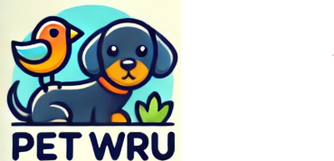

Home
Posts
Missing pets
Reunited pets
Donations
login
☰
Resources
Find Missing Pets - Resource Links
Petfinder
Search for Animal Shelters or Rescues
Find your local animal shelter.
The Humane Society
What to Do If You Lose Your Pet
Step-by-step guide on finding lost pets.
ASPCA
Pet Care Tips and Advice
Learn about pet care, training, and health tips.